The Alexandrofsky Head Mechanical Works and Major Whistler’s Work Associates
Image 223
Alexandrofsky Head Mechanical Works in about 1840
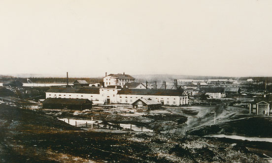
Alexandrofsky, c. 1840. Photograph. Courtesy of Estelle and David Knapp. [full resolution image]
Image 224
This bird’s-eye view of the Alexandrofsky Head Mechanical Works was drawn for Andrew McCalla Eastwick by a draftsman in 1844. It is here that the locomotives and rolling stock for the St. Petersburg–Moscow Railway were being made by the firm of Harrison, Winans and Eastwick, and the three partners and their families lived.
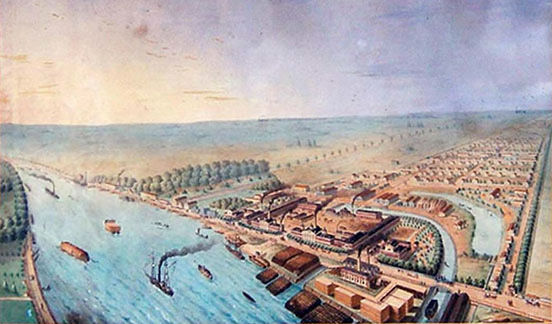
Bird’s-eye Drawing of the Alexandrofsky Head Mechanical Works. Watercolor. 60 x 90 cm. Courtesy of Estelle and David Knapp. [full resolution image]
Image 225
Alexandrofsky Head Mechanical Works in about 1845
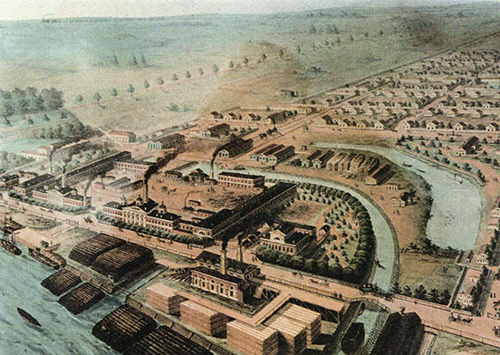
Alexandrofsky Head Mechanical Works. c. 1845. Reproduction of a drawing. Courtesy of Estelle and David Knapp. [full resolution image]
Image 226
Joseph Harrison Jr., partner in the firm of Harrison, Winans and Eastwick, who were building the locomotives and rolling stock for the St. Petersburg–Moscow Railway at the Alexandrofsky Head Mechanical Works
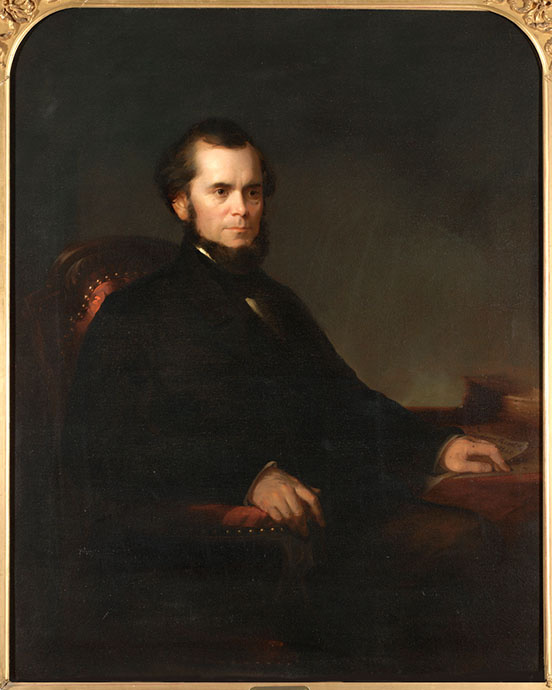
Thomas Buchanan Read (1822–1872). Joseph Harrison, Jr. 1860. Oil. 51 x 41¼ in. Pennsylvania Academy of the Fine Arts, Philadelphia, PA; gift of Leland Harrison. [full resolution image]
Image 227
Sarah (Poulterer) Harrison, wife of Joseph Harrison Jr.
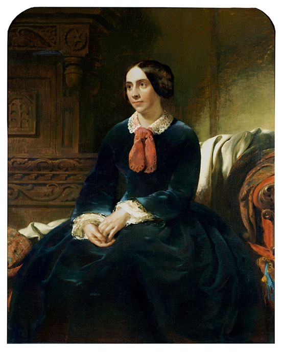
Sarah Poulterer Harrison. c. 1850. Oil. 50 1/8 x 40 1/8 in. Pennsylvania Academy of the Fine Arts, Philadelphia, PA; gift of Leland Harrison. Formerly attributed to Thomas Buchanan Read (1822–1872). [full resolution image]
Image 228
Ross Winans Sr., whom his son Thomas DeKay represented as a partner in the firm of Harrison, Winans and Eastwick
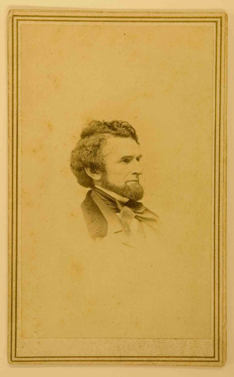
A.A. Turner (c. 1831–1866). Photograph … of Ross Winans, Sr. Photograph mounted on card. 9.2 x 5.6 cm; mount: 10.4 x 6 .5 cm. Imprint on mount: D. Appleton & Co., 443 & 445 Broadway, N.Y. A.A. Turner, photographer. GUL: Whistler Collection, PH1/155.
Image 229
Thomas DeKay Winans, partner in the firm of Harrison, Winans and Eastwick
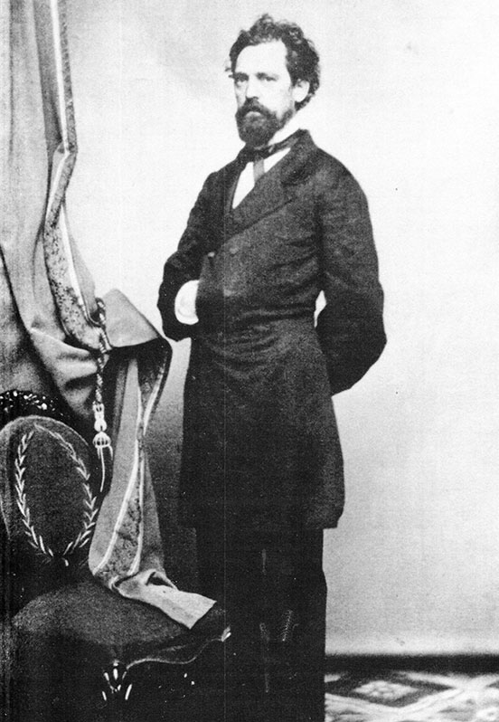
Thomas DeKay Winans. Photograph. Courtesy of Estelle and David Knapp. [full resolution image]
Image 230
Celeste Louise Revillon, wife of Thomas DeKay Winans
Bencann. Celeste (Revillon) Winans. c. 1860. Carte de visite. (MdHS; photograph courtesy of Estelle and David Knapp) [full resolution image]
Image 231
Celeste Louise Revillon, at the time of her marriage to Thomas DeKay Winans
William Louis Winans, brother of Thomas DeKay Winans, in Russia
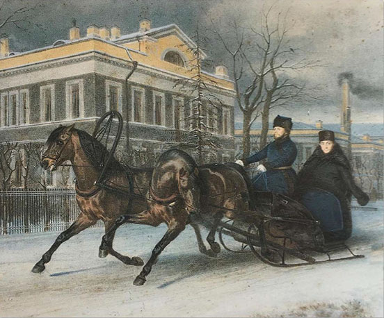
William Louis Winans in a Troika Outside his St. Petersburg Home. Lot 232: The Agra Diamond, Christie’s auction house catalogue, 20 June 1990, p. 20. Courtesy of David Knapp. [full resolution image]
Image 233
Andrew McCalla Eastwick of the firm of Harrison, Winans and Eastwick
Portrait of Andrew McCalla Eastwick. 1846. Oil on canvas. 66 x 84 cm. Probably painted in Philadelphia, PA, by Robert Street of Germantown. Courtesy of Estelle and David Knapp. [full resolution image]
Image 234
Lydia Ann (James) Eastwick, wife of Andrew McCalla Eastwick
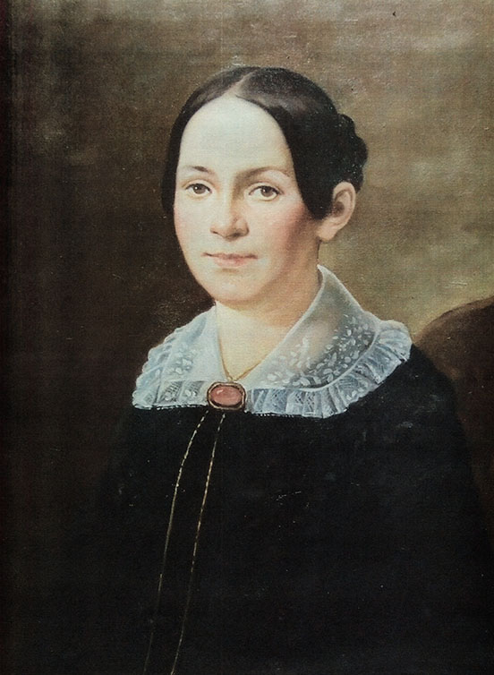
Portrait of Lydia Ann (James) Eastwick. 1846. Oil on canvas. 66 x 84 cm. In the private collection of Maria Edna Eastwick, Greenwich, CT; photograph courtesy of Estelle and David Knapp. [full resolution image]
Image 235
Edward Peers Eastwick, eldest son of Andrew McCalla and Lydia Ann (James) Eastwick, came to Russia with his father before the other family members.
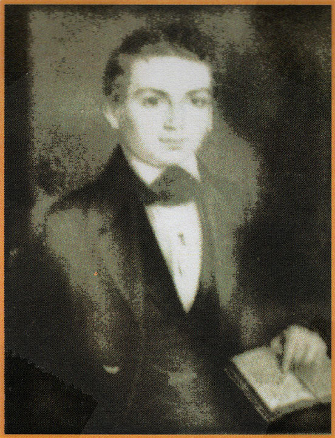
Portrait of Edward Peers Eastwick. Courtesy of Estelle and David Knapp. [full resolution image]
Image 236
Phillip and Charles Eastwick, sons of Andrew McCalla and Lydia Ann (James) Eastwick, were playmates of James and Willie Whistler.
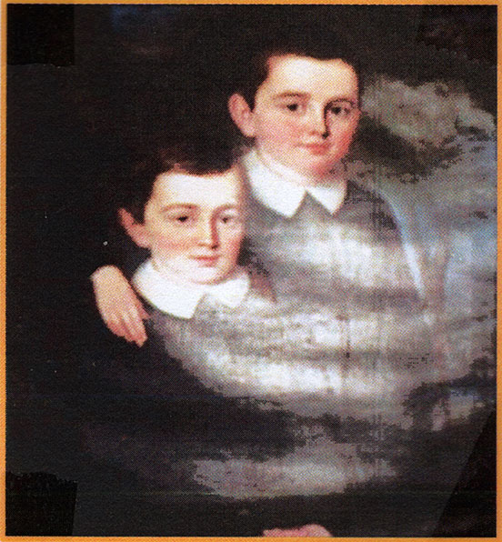
Portrait of Phillip and Charles Eastwick. Courtesy of Estelle and David Knapp. [full resolution image]
Image 237
Maria and Margaret Eastwick, the two elder daughters of Andrew McCalla and Lydia Ann (James) Eastwick
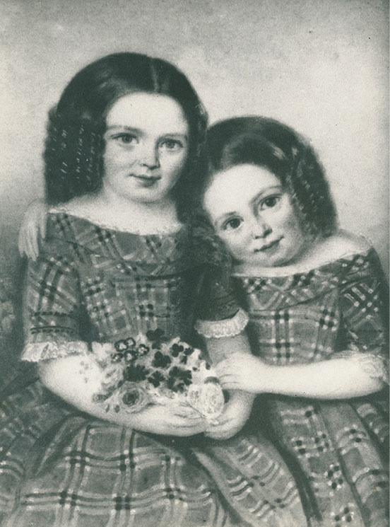
Portrait of Maria and Margaret Eastwick. c. 1846. Miniature. In the private collection of Marjorie S. Eastwick, Lively, VA; photograph courtesy of Estelle and David Knapp. [full resolution image]
Image 238
Lydia Eastwick with her two sons – William on the left and George on the right – in St. Petersburg in about 1849
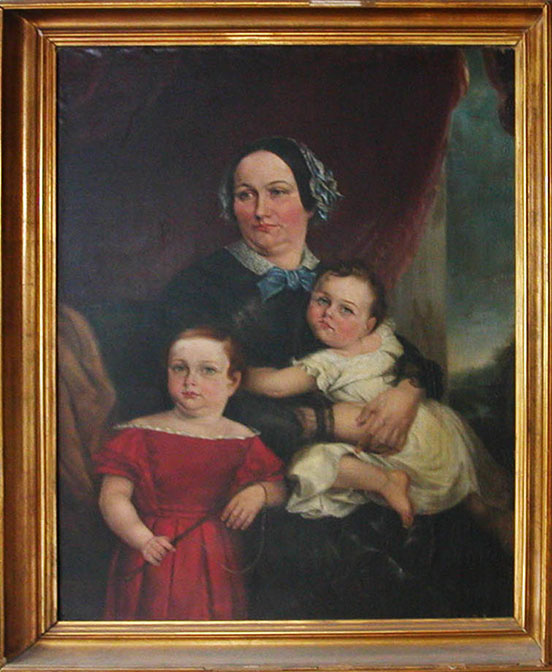
Lydia Ann Eastwick and Sons in Russia. c. 1849. Oil on canvas. Courtesy of Estelle and David Knapp. [full resolution image]
Image 239
The house in which the Eastwicks and Harrisons lived at the Alexandrofsky Head Mechanical Works
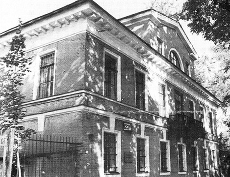
Eastwick and Harrison home at Alexandrofsky Head Mechanical Works. Photograph. Courtesy of Estelle and David Knapp. [full resolution image]
Image 240
Floor plan of Eastwick and Harrison home: the Eastwicks lived on the first floor; the Harrisons on the second floor; and the schoolroom, where Rev. Thomas S. Ellerby preached on Sundays, was in the garrett.
Floor Plan of Eastwick and Harrison Home at Alexandrofsky Head Mechanical Works. Courtesy of Estelle and David Knapp. [full resolution image]
Image 241
Engineer-General Alexander Wilson was in charge of the orphanage in which linens and playing cards were made.
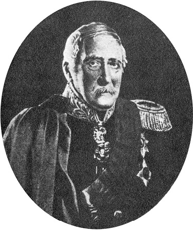
Engineer-General Alexander Wilson (Bowles, “From the Banks of the Neva,” p. 68) [full resolution image]
Image 242
Playing cards and linens of superb quality were made at the Aleksandrovskaia Manufactory (also called General Wilson’s), located on the Schlüsselberg Road, which Aunt Alicia visited in the summer of 1844.
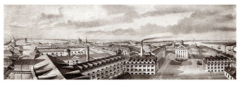
The Imperial Aleksandrovskaia Manufactory. (Shtiglits, Promyshlennaia arkhitektura Peterburga, facing p. 64) [full resolution image]
Image 243
Count Pyotr Andreevich Kleinmikhel’ was head of the Main Administration of Transport and Public Buildings, and Major Whistler’s superior.
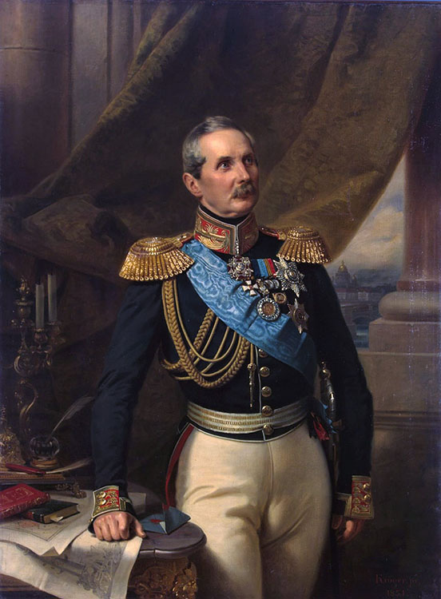
Franz Krüger (1797–1857). Portrait of Count Peter von Kleinmichel (1793–1869). 1851. Oil on canvas. 53.9 x 40.9 in. (137 x 104 cm). Inscribed below right: “Krüger px. 1851.” State Hermitage Museum, St. Petersburg (ERZh-211).
Image 244
Count Aleksei Andreevich Arakcheev, mentor to young Pyotr Andreevich Kleinmikhel’, in whom he instilled his Draconian philosophy
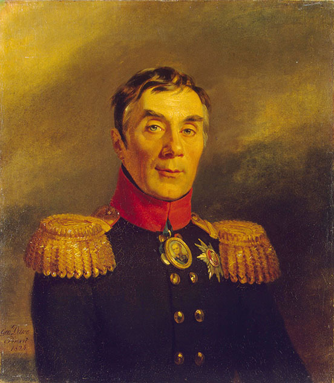
George Dawe (1781–1829). Portrait of Alexey A. Arakcheyev (1769–1834). 1824. Oil. 70 x 62.5 cm. The Military Gallery of the Winter Palace, State Hermitage Museum, St. Petersburg (GE-7813).
Image 245
Konstantin Vladimirovich Chevkin was chief of staff of the Corps of Mining Engineers and a member of the Construction Commission for the St. Petersburg–Moscow Railway. He and Major Whistler had discussions about education systems.
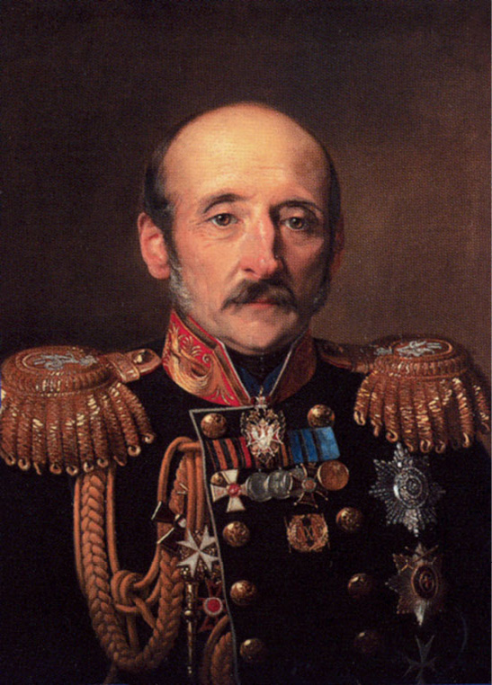
Konstantin Vladimirovich Chevkin. 1857–1861. The State Government in Russia in Portraits from the Ninth through the Twenty-First Century, accessed 19 February 2023.
Image 246
Engineer-General Jean-Antoine Maurice Destrem was a transport engineer, poet, and translator of the Russian fabulist Ivan Krylov
Pavel Petrovich Mel’nikov, transport engineer, head of the Northern Administration of the St. Petersburg–Moscow Railway, became one of Major Whistler’s closest Russian friends.
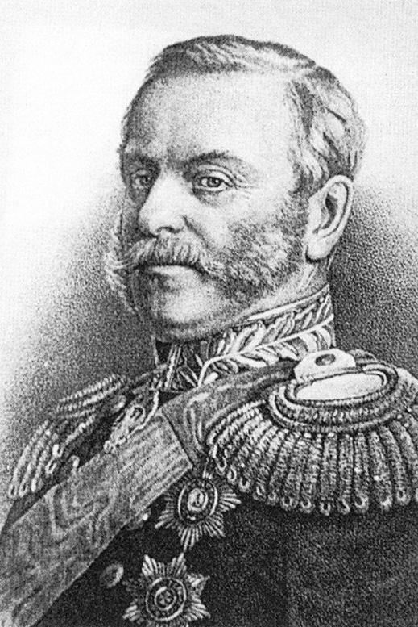
Pavel Petrovich Mel’nikov (Ot konki do tramvaia Iz istorii peterburgskogo transporta [From the Horse Car to the Street Car: From the History of Petersburg Transportation][St. Petersburg: Liki Rossii; Moscow: Dzhuliia, 1994], p. 13) [full resolution image]
Image 248
Nikolai Osipovich Kraft, transport engineer, head of the Southern Administration of the St. Petersburg–Moscow Railway
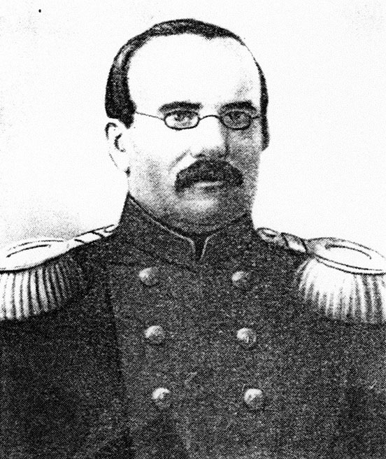
Nikolai Osipovich Kraft (Veviorovskii, LIIZhT 1809–1959, p. 48) [full resolution image]
Image 249
Dmitrii Ivanovich Zhuravskii, transport engineer, was in charge, along with Major Whistler, of building the bridge across the Vereb’ia River along the route of the St. Petersburg–Moscow Railway. He presented tickets for the opera to Deborah Whistler.
Anton Ivanovich Shtukenberg, transport engineer, was first cousin to A.O. Koritskii, James’s private drawing teacher, and a great admirer of Major Whistler.
Baron Anton Ivanovich Del’vig, transport engineer, on special assignment to Count P.A. Kleinmikhel’, considered Major Whistler “remarkable.”
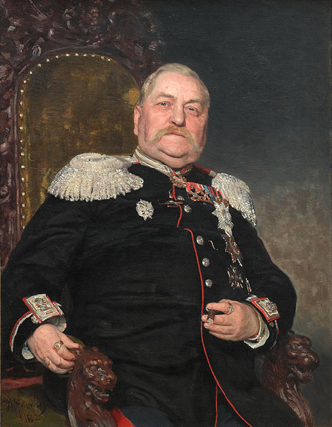
Ilya Repin (1844–1931). Portrait of Military Engineer A.I. Delvig. 1882. 108 × 86 cm. State Tret’iakov Gallery, Moscow. [full resolution image]
Image 252
Order of St. Anne, 2nd Class, Civil Division, was awarded to Major Whistler in 1847.
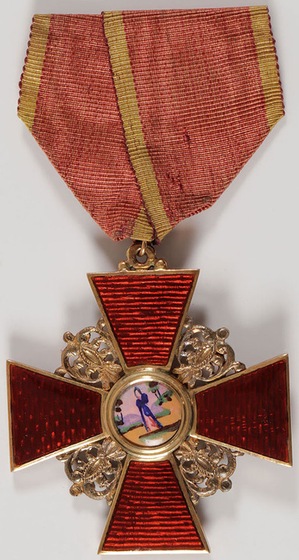
Imperial Russian Order of St. Anne, 2nd Class, Civil Division. 1850. 18k gold and enamel; 14kt gold ribbon wire. 4.4 x 4.4 cm. Stamped with 1850 date. Sold at auction by Jackson’s International Auctioneers, 19 November 2020. [full resolution image]